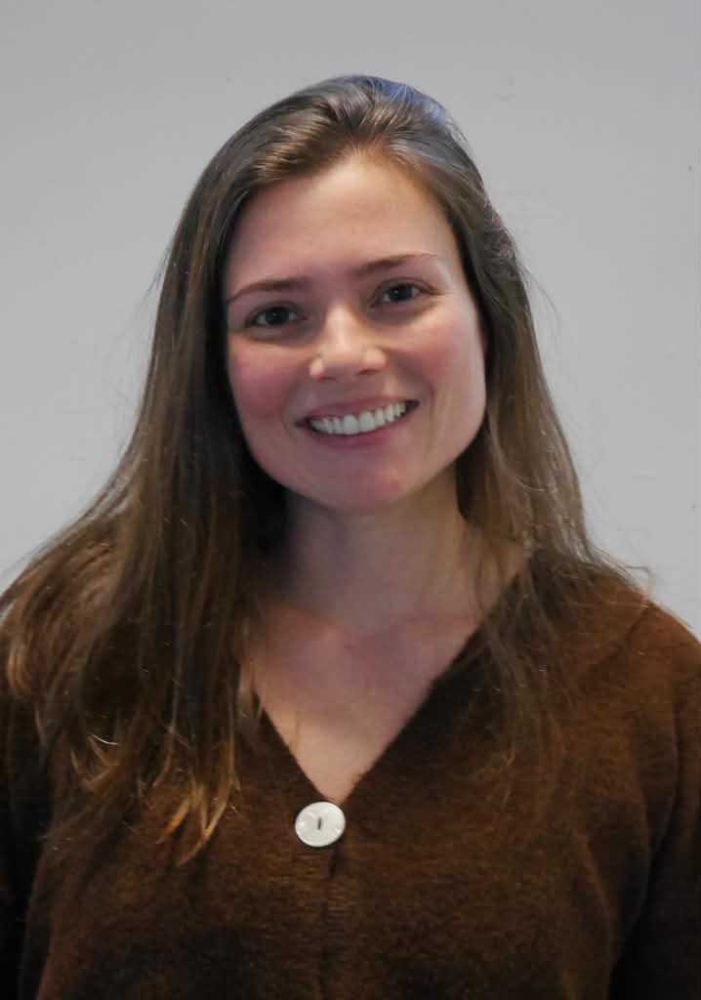

About Me

I'm an astrophysicist and CAPS Postdoctoral Fellow at the University of Illinois Urbana-Champaign. I earned my PhD in Astronomy from the University of Florida, after transitioning from a career in engineering and industry.
My research focuses on galaxy formation and evolution, connecting the physics of the interstellar medium to cosmological observations. I combine simulations, radiative transfer, and machine learning to model atomic and molecular line emission across cosmic time. I'm also the lead developer of SLICK.
Beyond research, I'm passionate about science communication and education. Outside astronomy, I enjoy singing, playing guitar, and sports.
Research & Publications
My research spans galaxy formation, interstellar medium physics, and cosmological observations, with an emphasis on connecting detailed physical models to large-scale surveys and observations.
Galaxy Formation & Interstellar Medium Physics
I develop SLICK (the Scalable Line Intensity Computation Kit), a framework for predicting atomic and molecular line emission in cosmological hydrodynamical simulations. By combining interstellar medium modeling, radiative transfer, and machine learning, my work connects the physical conditions of gas in galaxies to observable emission across cosmic time.
Related Publications
- Garcia, K. et al. (2024). SLICK: Modeling a Universe of Molecular Line Luminosities in Hydrodynamical Simulations. ApJ, 974, 197.
- Anirudh, R. et al., including Garcia, K. (2025). Predicting the Resolved CO Emission of z = 1–3 Star-forming Galaxies. A&A, 699, A19.
- Garcia, K. et al. SLICK-2: Multi-Line ISM Emission in Cosmological Simulations. In preparation.
Line-Intensity Mapping
I investigate the connection between galaxy-scale physics and the aggregate emission measured by line-intensity mapping experiments. Using cosmological simulations, I predict CO, [CI], and [CII] luminosity functions, line ratios, and power spectra, and explore how these observables depend on the physical conditions of galaxies. I also participate in observational collaborations including TIM and FYST.
Related Publications
- Bracks, J. S. et al., including Garcia, K. (2026). Forecasting the Cross Correlation of Terahertz Intensity Mapper [CII] Line Intensity Maps with Euclid Galaxies. ApJ, 1005, 17.
- Agrawal, S. et al., including Garcia, K. (2026). A New Window into the Baryon Cycle at Cosmic Noon with Line Intensity Mapping: Forecasts for Auto- and Cross-correlations in [CII]-158 μm, HI 21 cm, CO(J+1→J), and Hα Galaxies. arXiv:2602.24120.
- Karoumpis, C. et al., including Garcia, K. (2024). [CII] line intensity mapping the epoch of reionization with the Prime-Cam on FYST: II. CO foreground masking based on an external catalog. A&A, 691, A262.
- Garcia, K. et al. SLICK Predictions for Line-Intensity Mapping. In preparation.
AGN Feedback & Molecular Gas
I study how radiation from active galactic nuclei changes the thermal and chemical conditions of the interstellar medium, and how these changes affect molecular and atomic line emission. This work connects AGN physics to observable diagnostics of galaxies and future infrared observations.
Related Publications & Ongoing Work
- Garcia, K., Patil, P., Petric, A. et al. AGN Radiation and ISM Line Emission in Cosmological Simulations. In preparation.
Galaxy Clusters & Large-Scale Structure
I investigate the detection and characterization of galaxy clusters using large multiwavelength surveys. I lead a cluster catalog study in the Boötes field, identifying 825 candidates over a wide redshift range, and contribute to the MaDCoWS2 collaboration, which searches for galaxy clusters across thousands of square degrees of the sky.
Related Publications
- Garcia, K. et al. Galaxy Cluster Detection in the Boötes Field. Submitted.
- Thongkham, K. et al., including Garcia, K. (2024). The Massive and Distant Clusters of WISE Survey 2: Second Data Release.
Cosmological Statistics & Methods
My work in cosmological statistics includes the development of efficient methods for measuring the anisotropic three-point correlation function of galaxies, a higher-order statistic that provides information beyond traditional two-point clustering measurements.
Related Publication
- Garcia, K. & Slepian, Z. (2022). Improving the Line of Sight for the Anisotropic 3-Point Correlation Function of Galaxies: Centroid and Unit-Vector-Average Methods Scaling as O(N²). MNRAS, 515, 1199–1217.
Supernova Cosmology & Survey Forecasts
My earlier research explored the use of Type Ia supernova peculiar velocities as probes of cosmology, including forecasts for the information that future surveys such as LSST could extract from large supernova samples.
Related Publication
- Garcia, K., Quartin, M. & Siffert, B. B. (2020). On the Amount of Peculiar Velocity Field Information in Supernovae from LSST and Beyond. Physics of the Dark Universe, 29, 100519.
Science Communication & Outreach
I'm passionate about making astronomy accessible to broader audiences. I co-founded AstroTubers, a collaborative science communication initiative in Brazil, and have been involved in astronomy outreach and education for several years.
I also create independent science content in Portuguese, reaching an audience of more than 50,000 followers on social media.
Curriculum Vitae
Contact
Karolina Garcia
CAPS Postdoctoral Fellow
University of Illinois Urbana-Champaign
National Center for Supercomputing Applications
Email:
ktgarcia@illinois.edu
GitHub:
github.com/karolinagarcia
LinkedIn:
LinkedIn Profile